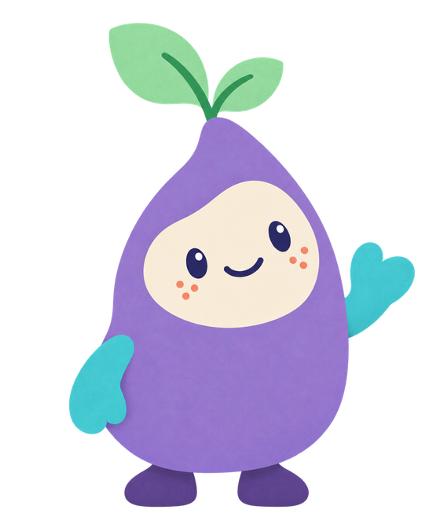

Small pieces.
Lovely possibilities.
Two little worlds to explore.
Every game and puzzle is ready to play.
Colour Blocks
Find a space. Make a row.
See the numbers add up.

Nook's Garden
Picnic numbers, missing words
and patterns to make.
No rush. No noisy surprises. Just play.
Players, privacy and devices
Choose the player button above to add a nickname and picture or switch children. Each player has their own settings and place in the games. Every activity and puzzle is available to every player.
Names and player IDs stay in this browser's storage. They are never sent to the server. People sharing this browser can see these local profiles; they are not password-protected accounts. Another browser or device has its own profiles. Clearing browser data deletes them.
The games work without profiles being saved if browser storage is unavailable. Built-in speech uses bundled voice clips, played only when tapped. Familiar words outside the library use an installed local device voice. Word pictures are Mulberry Symbols by Steve Lee, licensed CC BY-SA 4.0 (mulberrysymbols.org). No microphone, analytics, advertising, accounts or online leaderboards.
Use Safari on iPad or your Android browser. The A–Z keys work without opening the device keyboard, and voice is optional. For another device on the same Wi-Fi, use the network address supplied with your preview.